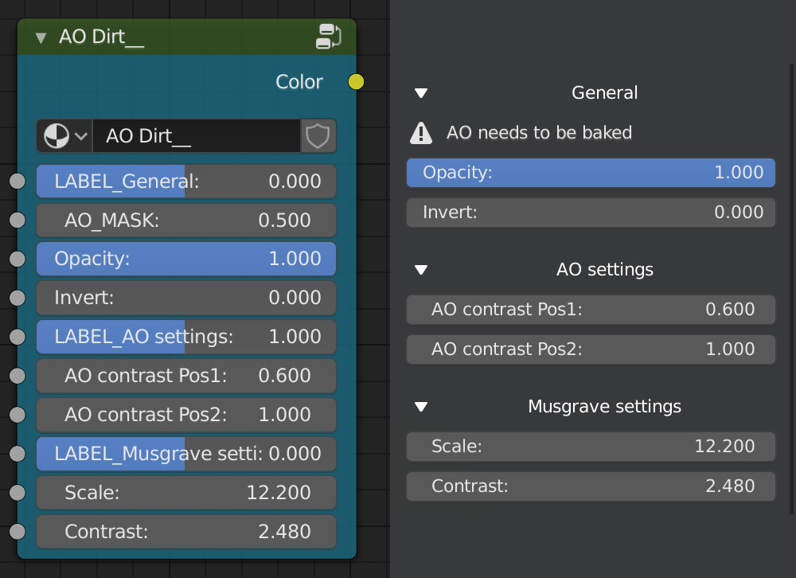

Custom Node Masks
Custom node groups for masks can be used in layer masks.
When creating a node group for a mask make sure the name ends with two "_". The node groups name should look like this: Name of the node group__
Outputs
This node group should just have one output. This should be a black and white value.
Inputs
Normal inputs will be represented as they are in the node group. There are a few special input types. These will be drawn differently in the layer settings panel. The addon detects these channels based on their name. These are the special names:
- BEVEL_MASK: This input will try to get a bevel mask when the node group is selected or when a bevel mask is baked
- AO_MASK: This input will try to get a ambient occlusion mask when the node group is selected or when a AO mask is baked
- IMAGE_label of the input: This will allow you to select an image
- SEPARATOR: This will add a separator in the layer settings UI, to create some room between settings
- LABEL_label of the input: This will create an expandable panel in the layer settings UI. When the default value of this input is set to 1, the panel will be expanded by default
This is how a node group will look in the UI with some of the special inputs in use:
